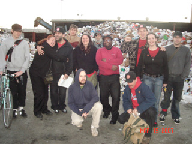

This is the news page for Department 600 - Public Service. This page displays *all* news items from this Department and its Unions. To see news only from a particular Union, click on the Union title below.
For an overview of the IWW's Union structure, please visit the Unions homepage.
Submitted on Sat, 08/13/2011 - 8:21pm
October 21, 22 & 23, 2011 : Portland, Oregon - Hosted by the Portland General Membership Branch of the I.W.W.
 The I.W.W. Food and Retail Workers Union is an organization of workers at every link in the supply chain of food and retail products- from processing facilities to warehouses to restaurants, cafes, grocery stores, strip malls, big box stores, and other retail shops. We have come together to fight for fundamental change in our industries. In the short term, we seek to build power with our coworkers to win improved wages, guaranteed hours, healthcare, and other crucial improvements to our working conditions. In the long term, we aim to establish industrial democracy through worker self-management of production for human needs, rather than capitalist
The I.W.W. Food and Retail Workers Union is an organization of workers at every link in the supply chain of food and retail products- from processing facilities to warehouses to restaurants, cafes, grocery stores, strip malls, big box stores, and other retail shops. We have come together to fight for fundamental change in our industries. In the short term, we seek to build power with our coworkers to win improved wages, guaranteed hours, healthcare, and other crucial improvements to our working conditions. In the long term, we aim to establish industrial democracy through worker self-management of production for human needs, rather than capitalist
Submitted on Sun, 04/06/2008 - 6:03pm
The syndicalist SAC union in Sweden has been campaigning for fair
wages for illegal immigrants in the last few months, resulting in
thousands of pounds in unpaid wages being paid to migrant workers.
The increasing organisation of illegal immigrants within the
syndicalist union SAC have lead to more and more blockades to force the
payment of unpaid wages, mainly from employment agencies in the
restaurant, cleaning, hotel and building industry. Millions Kronor in
unpaid wages have been have been won by the SAC. That these companies
and their customers don't want to attract attention to their
exploitation of illegal immigrants, in most cases the mere threat of a
union blockade has been enough to get the wages paid.
Submitted on Tue, 03/11/2008 - 1:13pm
Disclaimer - The opinions of the author do not necessarily match those of the IWW. This article is reposted in accordance to Fair Use guidelines.
By David L. Wilson - Monthly Review, March 6, 2008
Submitted on Wed, 03/21/2007 - 6:26pm
The weekend of March 16th was full of activity for the Bay Area IWW. On Friday there were two workplace intervention rallies, the first at 6:30 AM and the second twelve hours later.
It was still dark in the sky when FWs from the Bay Area GMB began gathering outside of the management office at Curbside Recycling. The reason for the visit was primarily to show visible support to the shop steward for repeated harassment (including unpaid suspension) on the part of management. Several of the shop workers were also there to show support, and the crowd was treated to invigorating speeches by several of the recyclers as well as other branch members.
The other reason for the rally was to demonstrate to management that the union can mobilize when it is needed to support the workers fighting for their interests. This is important because management is trying to drive out any workers who are accustomed to acting as a union, and because the workers may try to increase pressure for a good contract when the current one expires jointly with the the Buyback Recyclers, an IWW shop on the same lot. Management was clearly uncomfortable when around 20 wobblies entered the office to discuss the bullying of the shop steward...
Submitted on Mon, 04/24/2006 - 12:48pm
On April 22nd, Earth Day, Madison area union activists are launching a union organizing drive targeting restaurant and service workers employed on State Street and downtown Madison with the help of internationally acclaimed musicians, David Rovics and Alistair Hulett.
Officially titled, the Madison Downtown Workers Union (MDWU), the organizing drive is an effort to unite thousands of workers in hundreds of workplaces -- taverns, restaurants, cafes and retails shops -- across the city. IWW members believe that in building a union, workers will gain the power to improve their wages, benefits and working conditions. Unlike traditional unions, the IWW seeks to organize cooks, wait staff, dishwashers, bus persons, bartenders and baristas, shop clerks and others across multiple shops and job positions into One Big Union.